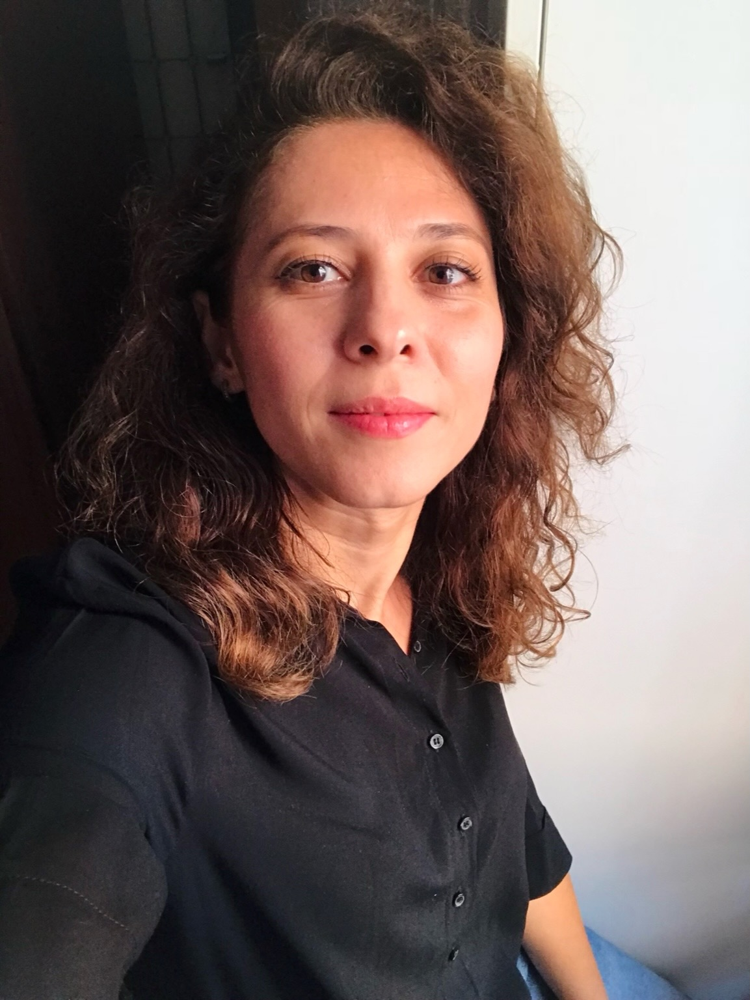

Dr Sinem Aslan

Sinem Aslan,
Associate Professor, University of Milan
Research Associate, ECLT & DAIS, Ca’ Foscari University of Venice
Broadly speaking, my research interests are in the areas of pattern recognition, computer vision and machine learning. Recently, I have been focusing on time-series analysis using machine learning for climate change risk assessment. For the full bio, please see the biography page.
News
- [05/2022] Joined to Ca Foscari University of Venice as an Assistant professor.
- [05/2018] I gave a seminar on Visual dictionaries and Semantic segmentation with DCNNs at Dokuz Eylül University, Electrical & Electronics Engineering Department, İzmir.
- [03/2018] I will be presenting our paper at the special session of Signal Processing Technologies for Gastronomy, Food Analysis, Nutrition and Dietetics of SIU 2018 .
- [01/2018] I gave a seminar on the topic of Image understanding: Visual dictionaries and Semantic segmentation at European Centre for Living Technology (ECLT) of University Ca' Foscari of Venice, Italy.
-
[11/2017] I gave a seminar on the topic of Exploring visual dictionaries: A model driven perspective at the Faculty of Science and Technology of University Paris-Est Créteil (UPEC), Paris, France. -
[09/2017] Our paper is accepted to be published in JVCI ! -
[09/2017] I presented our paper at MADiMa 2017 . -
[03/2017] I moved to Milano to join IVL team! -
[10/2016] My office hour for students who attend to "UBİ 543/UTİ 543 Secure Web Design" and "UBİ 627/UTİ 557 Research Techniques and Ethics" courses is on Wednesdays, between 14:00-15:00.